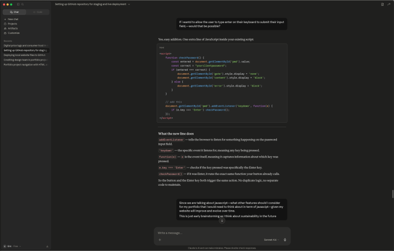
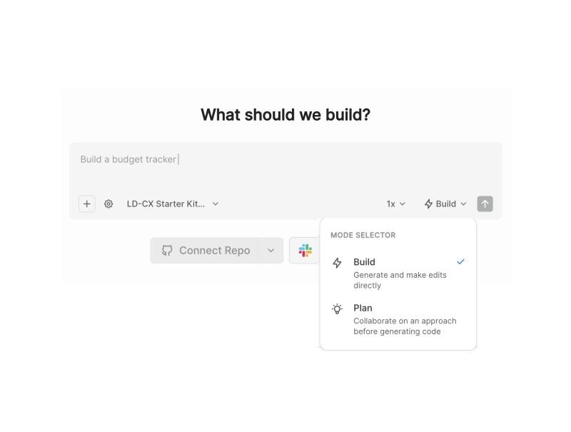
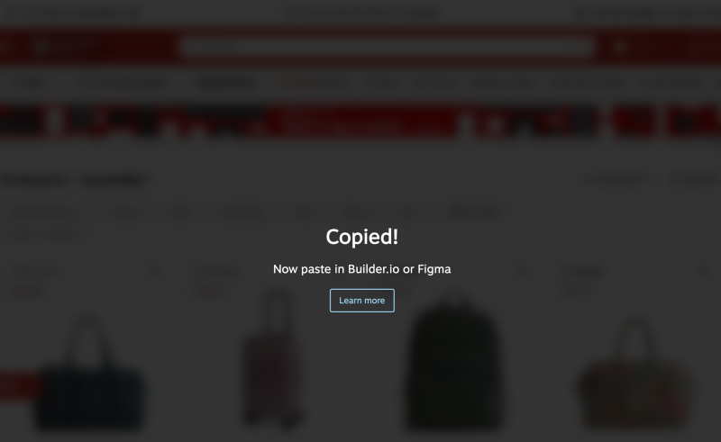
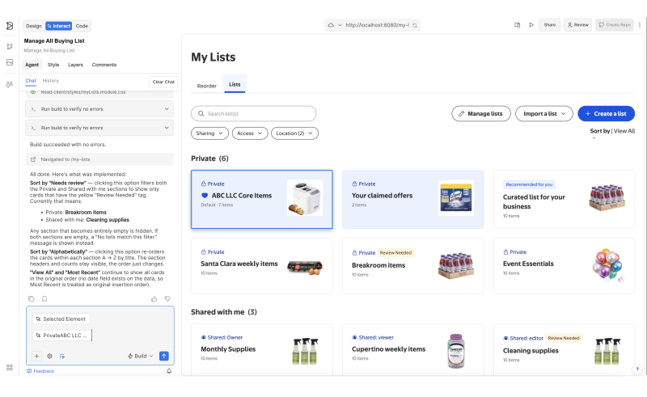
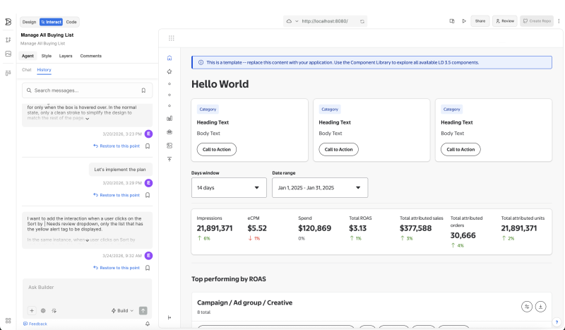
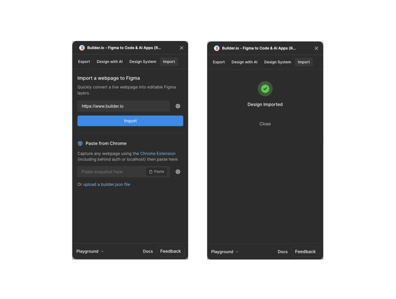

June 2026
Vibe Coding and the New UX Workflow

Experimental
When the Designer Became the Prompt
This isn't about replacing the designer. It's about what happens when the designer stops waiting for someone else to build the thing they already see in their head.

The way digital products get made is shifting — not loudly, not all at once, but steadily enough that the people closest to the work are starting to feel it. The handoff, the spec, the back-and-forth between design and engineering — all of it is being renegotiated in real time. Vibe coding is one name for what's happening. What it really describes is a new kind of fluency: the ability to move between intention and output faster than the old process ever allowed.
"The prompt is the new design brief. The difference is the AI actually talks back."
What makes this workflow feel different from every other tool that was supposed to change everything is the conversational quality of it. You aren't filling out a form or clicking through a generator — you're describing a decision, getting a response, reacting to it, and redirecting. It compounds quickly. A few exchanges in and you have something real to look at, something you can push against and refine. That back and forth is where the design thinking actually lives — not in the output, but in the conversation that shaped it.


The prompt isn't a command. It's a collaboration. When you paste a Figma export, add context about the user, describe the feeling a component should have, and ask the agent to respond — that's not automation. That's a design dialogue.
It's a dialogue. You're describing a design decision the same way you'd explain it to a collaborator, and the agent is responding with something you can actually react to.

